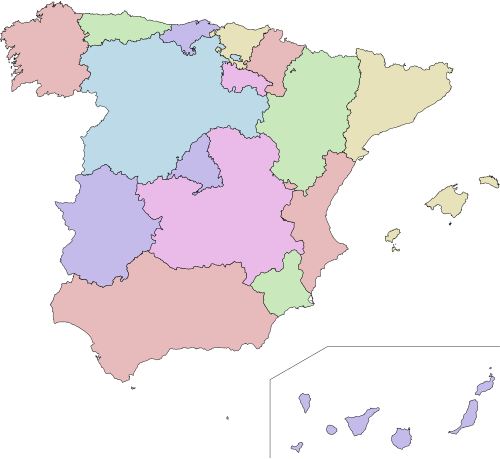
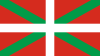
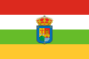
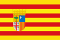
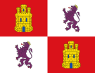

Lista De Definiciones
- Pais
- Un país (del francés pays)es un territorio con características geográficas y culturales propias, que puede o no constituir un Estado soberano o una entidad política dentro de un Estado.También es utilizado como sinónimo de Estado, conjunto de instituciones políticas dotadas de territorio, población y soberanía. A veces, partes de un Estado con una historia o cultura características son llamados países, especialmente por los oriundos del lugar, como por ejemplo Escocia, Gales, Inglaterra o Irlanda del Norte, países que conforman el Reino Unido. Puede referirse también a regiones o incluso comarcas sin grandes diferencias culturales con las de los alrededores. Este uso se da especialmente al hablar de las regiones naturales de Francia —el País de Auge, País de Buch, País de Caux, País de Sault, Países del Loira, el País Vasco francés, etc.— ya que la palabra «país» proviene del francés pays, idioma en el que el término también tiene esta polisemia. A su vez, el término francés procede del latín pagus.
- Comunidad Autónoma
- En España, una comunidad autónoma (C. A.) es una entidad territorial que, dentro del actual ordenamiento jurídico constitucional español, está dotada de autonomía, con instituciones y representantes propios y determinadas competencias legislativas, ejecutivas y administrativas, lo que la asimila en muchos aspectos a entidades federadas, por tanto podría decirse que España es cuasifederal.
- Provincia
- Una provincia es casi siempre una división administrativa dentro de un país o Estado. El término deriva de la antigua provincia romana, que era la principal unidad territorial y administrativa de las posesiones territoriales del Imperio romano fuera de Italia. Desde entonces, el término provincia ha sido adoptado por muchos países. En algunos países sin provincias reales, «las provincias» es un término metafórico que significa «fuera de la ciudad capital». Mientras que algunas provincias fueron creadas artificialmente por los poderes coloniales, otras se formaron en torno a grupos locales con sus propias identidades étnicas. Muchos tienen sus propios poderes independientes de la autoridad central o federal, especialmente en Canadá y Pakistán. En otros países, como China o Francia, las provincias son creación del gobierno central, con muy poca autonomía.
Lista de Comunidades Autónomas

Provincias
Galicia
- Lugo
- Ourense
- La Coruña
- Pontevedra
Principado de Asturias
- Oviedo
Cantabria
- Santander
País Vasco

- Álava
- Guipuzcua
- Vizcaya
Navarra
- Pamplona
La Rioja

- Logroño
Aragón

- Huesca
- Teruel
- Zaragoza
Cataluña
- Tarragona
- Barcelona
- Lérida
- Gerona
Islas Baleares
- Mallorca
- Menorca
- Formentera
- Ibiza
Castilla León

- Segovia
- Ávila
- Valladolid
- Salamanca
- Zamora
- León
- Burgos
- Soria
- Palencia
Comunidad de Madrid
- Madrid
Extremadura
- Cáceres
- Badajoz
Castilla La Mancha
- Guadalajara
- Toledo
- Ciudad Real
- Albacete
- Cuenca
Comunidad Valenciana
- Castellón
- Valencia
- Alicante
Región de Murcia
- Cartagena
Andalucía
- Almería
- Granada
- Jaen
- Malaga
- Sevilla
- Cádiz
- Huelva
- Córdoba
Islas Canarias
- Santa Cruz De Tenerife
- Las Palmas
Ceuta
- Ceuta
Melilla
- Melilla